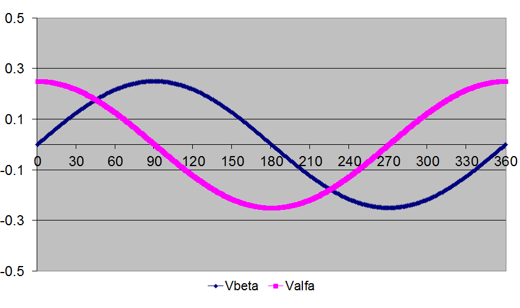
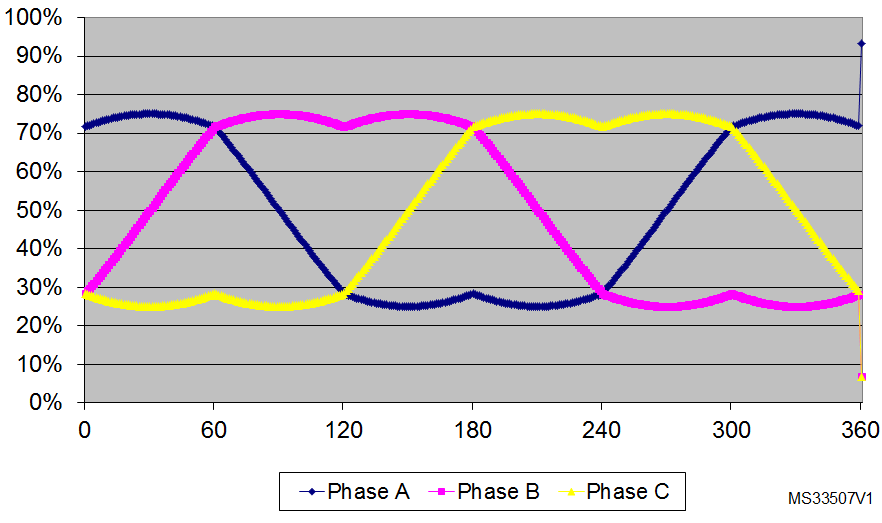
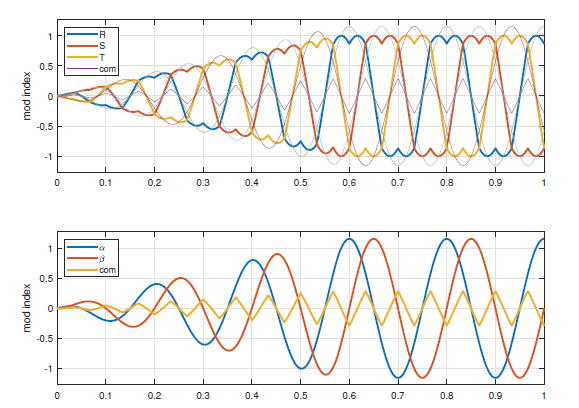
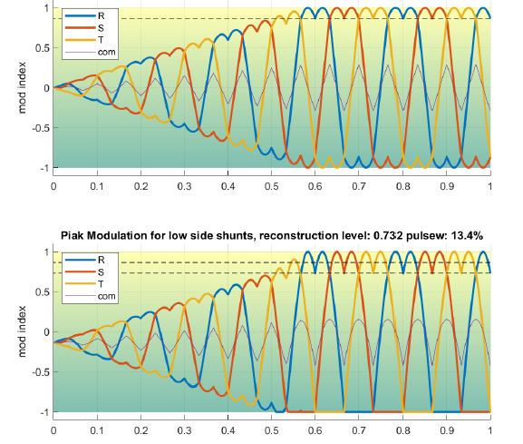
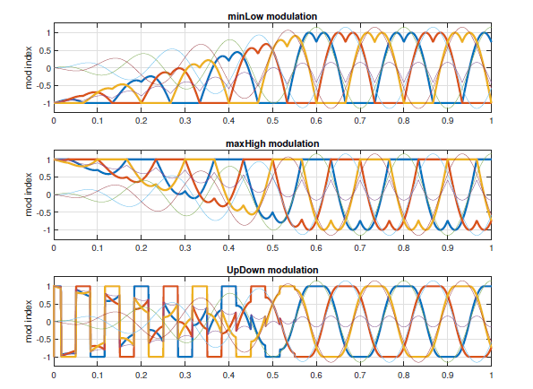

|
STM32 Motor Control SDK MCFW-6.4.1
Software Development Kit to build applications driving PMSM Motors with STM32
|
|
STM32 Motor Control SDK MCFW-6.4.1
Software Development Kit to build applications driving PMSM Motors with STM32
|
Prev: A priori determination of flux and torque current PI gains ↤| Table of Contents |↦ Next: Overmodulation
The first figure below shows the stator voltage components Va and Vb while the second illustrates the corresponding PWM for each of the six space vector sectors.


For:
\(U_\alpha = \sqrt{3}\cdot T \cdot V_\alpha\)
\(U_\beta = - T \cdot V_\beta\)
and
\(X = U_\beta\)
\(Y = \frac{U_\alpha + U_\beta}{2}\)
\(Z = \frac{U_\beta - U_\alpha}{2}\)
The literature demonstrates that the space vector sector is identified by the conditions shown in the following table:
| Y < 0 | Y ≥ 0 | |||||
|---|---|---|---|---|---|---|
| Z < 0 | Z ≥ 0 | Z < 0 | Z ≥ 0 | |||
| X ≤ 0 | X > 0 | X ≤ 0 | X > 0 | |||
| Sector | V | IV | III | VI | I | II |
The duration of the positive pulse widths for the PWM applied on Phase A, B and C are respectively computed by the following relationships:
Sectors I & IV:
\(t_A = \frac{T+X-Z}{2}\) \( t_B = t_A + Z\) \( t_C = t_B - X\)
Sectors II & V:
\(t_A = \frac{T+Y-Z}{2}\) \( t_B = t_A + Z\) \( t_C = t_A - Y\)
Sector III & VI:
\(t_A = \frac{T-X+Y}{2}\) \( t_B = t_C + X\) \( t_C = t_A - Y\)
...where \(T\) is the PWM period.
Considering that the PWM pattern is center-aligned and that the phase voltages must be centered at 50% of the duty cycle, it follows that the values to be loaded into the PWM output compare registers are given respectively by:
Sectors I & IV:
\(T_{CCR_A} = \frac T4+\frac{T/2+X-Z}2\) \(T_{CCR_B} = T_{CCR_A} + Z\) \(T_{CCR_C} = T_{CCR_B} + X\)
Sectors II & V:
\(T_{CCR_A} = \frac T4+\frac{T/2+Y-Z}2\) \(T_{CCR_B} = T_{CCR_A} + Z\) \(T_{CCR_C} = T_{CCR_B} - Y\)
Sector III & VI:
\(T_{CCR_A} = \frac T4+\frac{T/2+Y-X}2\) \(T_{CCR_B} = T_{CCR_C} + X\) \(T_{CCR_C} = T_{CCR_A} - Y\)
The transformation from three-phase to orthogonal two-phase is called the 'Clarke' transformation. Two 'tastes' of Clarke transformations exist: the power-invariant version and the amplitude-invariant version. In this document the amplitude-invariant as shown in equation (1.1) and (1.2) is used. Vector \(\vec{u}_{RST}\) is the input vector and \(\vec{u}_{αβ}\) is the output vector. It should be noted that when conserving amplitudes going from three phases to two, the power in α,β is reduced by a factor \(\frac{2}{3}\) which will show up in the torque calculation.
\(\left[\begin{matrix}u_{\alpha}\\u_{\beta}\\u_{0}\end{matrix}\right] = \frac 2{3} \left[\begin{matrix}1 & -\frac1{2} & -\frac1{2} \\0 & \frac{\sqrt3}{2} & -\frac{\sqrt3}{2} \\ \frac1{2} & \frac1{2} & \frac1{2}\end{matrix}\right] . \left[\begin{matrix}u_{R}\\u_{S}\\u_{T}\end{matrix}\right]\) (1.1)
Another way to write the amplitude-invariant Clarke transformation is:
\(\left[\begin{matrix}u_{\alpha}\\u_{\beta}\\u_{0}\end{matrix}\right] = \left[\begin{matrix} \frac2{3} & -\frac1{3} & -\frac1{3} \\0 & \frac1{\sqrt3} & -\frac1{\sqrt3}\ \\ \frac1{3} & \frac1{3} & \frac1{3}\end{matrix}\right] . \left[\begin{matrix}u_{R}\\u_{S}\\u_{T}\end{matrix}\right]\) (1.2)
Since the motor currents \(i_{R},i_{S},i_{T}\) only depend on voltage differences between phases, the average value \(u_{0}\) of the three phases relative to the reference is often implicitly omitted from the Clarke transformation because no effect on currents exists. A simpler transformation then results, usable for both voltages and currents:
\(\left[\begin{matrix}u_{\alpha}\\u_{\beta}\end{matrix}\right] = \left[\begin{matrix} \frac2{3} & -\frac1{3} & -\frac1{3} \\0 & \frac1{\sqrt3} & -\frac1{\sqrt3}\ \end{matrix}\right] . \left[\begin{matrix}u_{R}\\u_{S}\\u_{T}\end{matrix}\right]\) (1.3)
\(\left[\begin{matrix}i_{\alpha}\\i_{\beta}\end{matrix}\right] = \left[\begin{matrix} \frac2{3} & -\frac1{3} & -\frac1{3} \\0 & \frac1{\sqrt3} & -\frac1{\sqrt3}\ \end{matrix}\right] . \left[\begin{matrix}i_{R}\\i_{S}\\i_{T}\end{matrix}\right]\) (1.4)
Doing this 3 → 2 transformation destroys the possibility to transform back to the original phase voltages. Inversion is loss-less when keeping the matrices size 3 × 3. However in motor-control the current-control acts only on the α,β components followed by transforming them to the d,q synchronous frame a new \(\vec{u}_{dq}\) is computed. After that a new voltage \(\vec{u}_{αβ}\) is computed that needs to be converted into duty-cycle commands for the three PWM modules. This is the point where inversion is required.
\(\left[\begin{matrix}u_{R}\\u_{S}\\u_{T}\end{matrix}\right] = \left[\begin{matrix}1 & 0 & 1 \\ -\frac1{2} & \frac{\sqrt3}{2} & 1 \\ -\frac1{2} & -\frac{\sqrt3}{2} & 1\end{matrix}\right] . \left[\begin{matrix}u_{\alpha}\\u_{\beta}\\u_{com}\end{matrix}\right]\) (1.5)
The matrix in equation (1.5) is the inverse of the matrix in (1.2). Usually the third column of the matrix is left away and the remaining part is then called the 'Inverse Clarke' transformation. Including the third column and utilizing its potential avoids performance limitations at zero cost. Next chapter describes how we should choose \(u_{com}\)?
PWM units basically work with duties between 0 and 100%. In the ST motor control we chose to use modulation index instead. Modulation index has a range between -1 and +1. By definition:
\(m = 2d − 1\) (1.6)
\(m_{R} = \frac{2u_{R}}{u_{dc}}, m_{S} = \frac{2u_{S}}{u_{dc}}, m_{T} = \frac{2u_{T}}{u_{dc}}\) (1.7)
Realizing that the same effective voltage-vector \(u_{αβ}\) can result from an infinite number of different common-mode voltages \(u_{com}\) yields the most important equation needed for 3-phase modulator design:
\(\left[\begin{matrix}m_{R}\\m_{S}\\m_{T}\end{matrix}\right] = \left[\begin{matrix}1 & 0 & 1 \\ -\frac1{2} & \frac{\sqrt3}{2} & 1 \\ -\frac1{2} & -\frac{\sqrt3}{2} & 1\end{matrix}\right] . \left[\begin{matrix}m_{\alpha}\\m_{\beta}\\m_{com}\end{matrix}\right]\) (1.8)
Implementing (1.8) in code is made easier if first the \(m_{com} = 0\) option is calculated ('Inverse Clarke' transformation), succeeded by adding the \(m_{com}\) contribution:
\(\left[\begin{matrix}m_{R}\\m_{S}\\m_{T}\end{matrix}\right] = \left[\begin{matrix}1 & 0 \\ -\frac1{2} & \frac{\sqrt3}{2} \\ -\frac1{2} & -\frac{\sqrt3}{2} \end{matrix}\right] . \left[\begin{matrix}m_{\alpha}\\m_{\beta}\end{matrix}\right]\) (1.9)
By adding the wanted common mode component to the components from the Inverse Clarke transformation (1.9) the final modulation indices are reached:
\(m_R = m_{R0} + m_{com}\) (1.10)
\(m_S = m_{S0} + m_{com}\) (1.11)
\(m_T = m_{T0} + m_{com}\) (1.12)
Centered Modulation is often called space vector modulation (SVM). The essence is that the common mode is aimed as to keep the distance to the top and bottom supplies equal. In short:
\(m_{com} = \frac { max(m_{R_0},m_{S_0}, m_{T_0}) + min(m_{R_0},m_{S_0}, m_{T_0}) } {2}\) (1.13)
The resulting waveforms are shown in figure 1.1.
The ShiftedCenter modulation is designed to optimize current-measurement quality on systems that use low-side shunts and differential amplifiers with limited slew-rate and bandwidth. This new modulation method adjusts the common-mode signal such that the pulse-widths are kept as low as possible and hence keep the pulses on the low-side shunts as wide as possible, to enlarge the space for current-reconstruction.
Current reconstruction means that a the value of a 'bad' phase is reconstructed from the two remaining 'good' phases. Measured low-side shunt signals become unreliable when pulses get shorter. The time between the leading edge of the shunt signal and the sample-instant should be sufficient to let ringing due to reverse recovery and other effects die out and allow the amplifier to settle properly. When the time is too short, the short pulse result need to be disregarded. Fortunately the remaining two phases have longer pulses and hence can be used for reconstruction, but the available space for reconstruction is limited by the used modulation method. The highest duty at which the others are better than the worst is indicated by the dashed black line in the top graph in figure 1.2. The background color in figure 1.2 indicate the width of the smallest pulse: green equals wide, yellow corresponds to narrow. The ShiftedCenter modulation acts like Centered modulation at lower amplitudes, just shifted a bit, and starts

to exchange modulation space at the bottom to more modulation space at the top as is shown in the bottom part of figure (1.2). The pulse-width from which the shunt-samples need to be taken for proper current reconstruction is twice the width from centered modulation, quite an improvement!
The following modulation types may be interesting for other goals, mainly to 'stick' one of the three phases to the nearest limit. The thin purple lines are the common signal generated according to the algorithms in PWMC_SetPhaseDuty


Prev: A priori determination of speed PI gains ↤| Table of Contents |↦ Next: Overmodulation